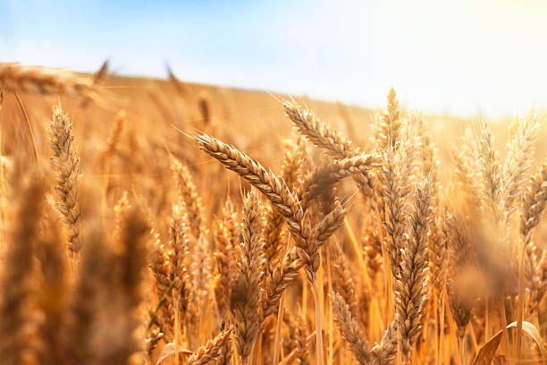
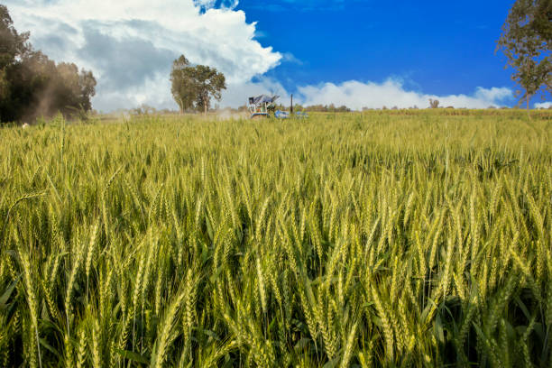
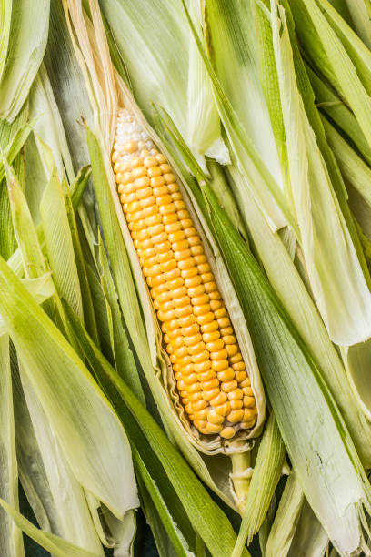
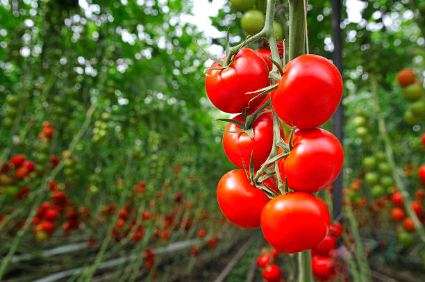
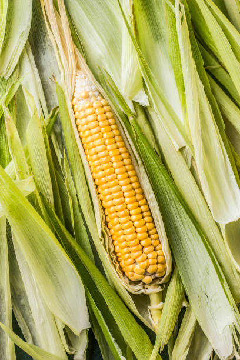
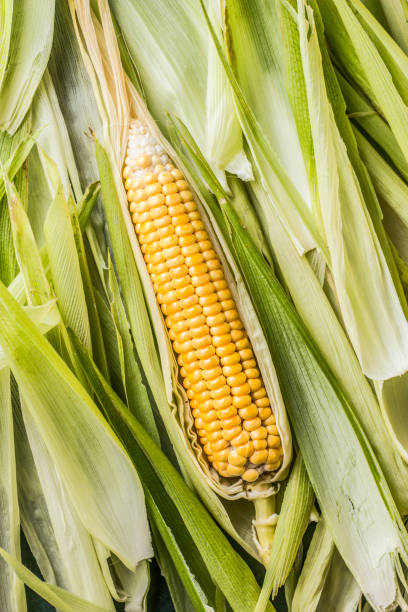

Growing Rice involves several steps, from land preparation to harvest. Here's a detailed step-by-step guide:
1] Choose a Suitable Location: Select a site with adequate water supply and flat terrain. Rice thrives in loamy or clayey soils that can retain water.
2] Germination and Seedling Stage:
Choose seeds that are certified and suited to your local climate and growing conditions.Soak seeds in water for 24 hours and then drain. This helps in faster germination. Some farmers treat seeds with fungicides to prevent diseases.
3] Sow Seeds:
Broadcast the treated seeds evenly over the nursery bed. Cover with a thin layer of soil and keep the bed moist.
4] Transplant Seedlings:
Transplant seedlings at a spacing of 20x20 cm or 30x30 cm, depending on the variety. Plant 2-3 seedlings per hill.
5] Fertilization:
Apply fertilizers based on soil test recommendations. Typically, nitrogen (N), phosphorus (P), and potassium (K) are required. Split applications of nitrogen are common: one-third at transplanting, one-third at tillering, and one-third at panicle initiation.
6] Harvesting:
Harvest when grains are fully mature, typically 30-35 days after flowering. Grains should be hard and golden. Store grains in cool, dry, and well-ventilated storage facilities to prevent pest and moisture damage.
मराठी
तांदूळ पिकवण्यासाठी जमीन तयार करण्यापासून कापणीपर्यंत अनेक पायऱ्यांचा समावेश होतो. येथे तपशीलवार चरण-दर-चरण मार्गदर्शक आहे:
1] योग्य स्थान निवडा: पुरेसा पाणीपुरवठा आणि सपाट भूभाग असलेली साइट निवडा. तांदूळ चिकणमाती किंवा चिकणमाती मातीत वाढतो ज्यामध्ये पाणी टिकून राहते.
2] उगवण आणि रोपांची अवस्था:
प्रमाणित आणि तुमच्या स्थानिक हवामानाला आणि वाढत्या परिस्थितीला अनुकूल असे बियाणे निवडा. बिया 24 तास पाण्यात भिजत ठेवा आणि नंतर काढून टाका. त्यामुळे लवकर उगवण होण्यास मदत होते. काही शेतकरी रोग टाळण्यासाठी बुरशीनाशकांनी बीजप्रक्रिया करतात.
3] बियाणे पेरणे:
प्रक्रिया केलेले बियाणे रोपवाटिकेवर समान रीतीने पसरवा. मातीच्या पातळ थराने झाकून ठेवा आणि बेड ओला ठेवा.
४] रोपे लावा:
विविधतेनुसार रोपे 20x20 किंवा 30x30 सेमी अंतरावर लावा. प्रत्येक टेकडीवर 2-3 रोपे लावा.
5] फर्टिलायझेशन:
माती परीक्षणाच्या शिफारशींवर आधारित खते द्या. सामान्यतः, नायट्रोजन (एन), फॉस्फरस (पी), आणि पोटॅशियम (के) आवश्यक आहे. नायट्रोजनचे स्प्लिट ऍप्लिकेशन सामान्य आहेत: एक तृतीयांश रोपण करताना, एक तृतीयांश मशागत करताना आणि एक तृतीयांश पॅनिकल इनिशिएशनच्या वेळी.
६] कापणी:
धान्य पूर्ण परिपक्व झाल्यावर कापणी करा, विशेषत: फुलांच्या 30-35 दिवसांनी. धान्य कठोर आणि सोनेरी असावे. थंड, कोरड्या आणि हवेशीर स्टोरेज सुविधांमध्ये धान्य साठवा जेणेकरून कीटक आणि ओलावा नुकसान टाळण्यासाठी.
వినండి
2. WHEAT / 2.गहू


ENGLISH
Wheat involves several steps, from land preparation to harvest. Here's a detailed step-by-step guide:
1] Seedling Stage:
Choose seeds that are certified and suited to your local climate and growing conditions.
2] Seed Treatment:
Soak seeds in water for 24 hours and then drain. This helps in faster germination. Some farmers treat seeds with fungicides to prevent diseases.
3] Prepare Nursery Beds:
Create raised nursery beds in a separate area. Beds should be 1-2 meters wide and length as needed.
4] Transplant Timing:
Transplant seedlings when they are 20-25 days old or have 4-5 leaves.
5] Harvesting Stage:
Harvest when grains are fully mature, typically when the grain moisture content is about 14-20%. Grains should be hard and the straw should be yellow.
मराठी
गव्हामध्ये जमीन तयार करण्यापासून कापणीपर्यंत अनेक पायऱ्यांचा समावेश होतो. येथे तपशीलवार चरण-दर-चरण मार्गदर्शक आहे:
1] रोपांची अवस्था:
प्रमाणित आणि तुमच्या स्थानिक हवामान आणि वाढत्या परिस्थितीला अनुकूल अशी बियाणे निवडा.
2] बीजप्रक्रिया:
बिया 24 तास पाण्यात भिजत ठेवा आणि नंतर काढून टाका. त्यामुळे लवकर उगवण होण्यास मदत होते. रोग टाळण्यासाठी काही शेतकरी बियाण्यांवर बुरशीनाशके उपचार करतात.
3] नर्सरी बेड तयार करा:
वेगळ्या भागात वाढलेल्या रोपवाटिका बेड तयार करा. बेड आवश्यकतेनुसार 1-2 मीटर रुंद आणि लांबीचे असावेत.
4] प्रत्यारोपणाची वेळ:
रोपे 20-25 दिवसांची झाल्यावर किंवा 4-5 पाने असताना प्रत्यारोपण करा.
5] काढणीची अवस्था:
धान्य पूर्ण परिपक्व झाल्यावर कापणी करा, विशेषत: जेव्हा धान्यातील आर्द्रता 14-20% असते. धान्य कठोर असावे आणि पेंढा पिवळा असावा.
వినండి
3. MAIZE / 3.मका

ENGLISH
Growing maize involves several key steps.
1] Planting:
Sow seeds when the soil temperature is consistently above 50°F (10°C). The exact time varies by region but is typically in the spring.
2] Germination and Seedling Stage:
After planting, the maize seeds germinate and grow into seedlings. During this stage, the seedlings require adequate moisture, warmth, and nutrients to establish a strong root system and develop healthy leaves.
3] Vegetative Growth:
Once the maize plants have established a good root system, they focus on vegetative growth. The plants grow larger and develop more leaves and branches, which are important for photosynthesis and fiber production. The plants are irrigated and fertilized regularly to promote healthy growth.
4] Flowering and Fruit Formation:
After around 6-8 weeks of growth, the maize plants start to produce flowers. The flowers are pollinated either by bees or self-pollination. After pollination, the flowers develop into bolls, which contain the maize seeds.
5] Weed Control:
Control weeds by manual weeding or using pre-emergence herbicides like Pendimethalin at 0.5-1.0 kg/ha within 2-3 days of sowing.
6] Harvesting:
Harvest the plants by cutting them at the base using a sickle and let them dry in the field for a few days.
By following these steps, you can effectively grow and harvest a healthy crop of maize.
मराठी
मका पिकवण्यासाठी अनेक महत्त्वाच्या पायऱ्यांचा समावेश होतो.
१] लावणी:
मातीचे तापमान सातत्याने ५०°F (१०°C) पेक्षा जास्त असेल तेव्हा बिया पेरा. अचूक वेळ प्रदेशानुसार बदलते परंतु विशेषत: वसंत ऋतूमध्ये असते.
2] उगवण आणि रोपांची अवस्था:
लागवडीनंतर मक्याचे बियाणे अंकुरित होऊन रोपे बनतात. या अवस्थेत, रोपांना मजबूत मूळ प्रणाली स्थापित करण्यासाठी आणि निरोगी पाने विकसित करण्यासाठी पुरेसा ओलावा, उबदारपणा आणि पोषक तत्वांची आवश्यकता असते.
3] वनस्पती वाढ:
एकदा मक्याच्या झाडांनी चांगली मूळ प्रणाली स्थापित केली की, ते वनस्पतींच्या वाढीवर लक्ष केंद्रित करतात. झाडे मोठी होतात आणि अधिक पाने आणि फांद्या विकसित होतात, जे प्रकाशसंश्लेषण आणि फायबर उत्पादनासाठी महत्त्वपूर्ण असतात. निरोगी वाढीसाठी रोपांना नियमितपणे सिंचन आणि खत दिले जाते.
4] फुलांची आणि फळांची निर्मिती:
सुमारे 6-8 आठवड्यांच्या वाढीनंतर, मक्याच्या झाडांना फुले येऊ लागतात. फुलांचे परागकण एकतर मधमाश्यांद्वारे किंवा स्व-परागीकरणाद्वारे होते. परागणानंतर, फुलं मक्याचे दाणे बनतात.
5] तण नियंत्रण:
पेरणीनंतर 2-3 दिवसांत हाताने तण काढून किंवा पेंडीमेथालिन सारख्या 0.5-1.0 किलो/हेक्टर या तणनाशकांचा वापर करून तण नियंत्रित करा.
6] कापणी:
विळा वापरून रोपांची कापणी करा आणि त्यांना काही दिवस शेतात सुकू द्या.
या चरणांचे अनुसरण करून, आपण मक्याचे निरोगी पीक प्रभावीपणे वाढवू आणि काढू शकता.
వినండి
4. GROUNDNUT / 4.शेंगदाणे
ENGLISH
Growing groundnut involves several key steps to ensure a healthy and productive crop. Here's a detailed step-by-step guide to growing groundnut:
1] Seed Germination:
Ground nut seeds are sown in the soil, and with the help of water and warmth, they start to sprout. The seedling emerges from the seed and develops roots and shoots.
2] Vegetative Growth:
During this stage, the ground nut grows vegetatively, which means it focuses on developing its stems, leaves, and roots. The leaves of the plant absorb sunlight and convert it into energy through the process of photosynthesis, which is used to produce new cells and tissues.
3] Reproductive Growth:
This stage begins when the plant reaches maturity, which usually takes around 100 to 120 days after planting.
4] Grain Development:
Once the groundnut is formed, it begins to develop. The plant diverts its energy towards the grain, and it begins to grow and fill with starch, protein, and other nutrients.
5] Harvest:
Harvest when 70-80% of pods are mature (120-150 days after sowing)
By following these steps, you can effectively grow and harvest a healthy crop of groundnut.
मराठी
निरोगी आणि उत्पादक पीक सुनिश्चित करण्यासाठी शेंगदाणा पिकवण्यामध्ये अनेक महत्त्वाच्या पायऱ्यांचा समावेश होतो. शेंगदाणा पिकवण्यासाठी येथे तपशीलवार चरण-दर-चरण मार्गदर्शक आहे:
1] बियाणे उगवण:
भुईमूगाच्या बिया जमिनीत पेरल्या जातात आणि पाणी आणि उबदारपणाच्या मदतीने ते अंकुरू लागतात. बीपासून बीपासून नुकतेच तयार झालेले रोप तयार होते आणि मुळे आणि कोंब विकसित होतात.
2] वनस्पती वाढ:
या अवस्थेत, भुईमूग वनस्पतिवत् वाढतो, याचा अर्थ ते त्याचे देठ, पाने आणि मुळे विकसित करण्यावर लक्ष केंद्रित करते. वनस्पतीची पाने सूर्यप्रकाश शोषून घेतात आणि प्रकाशसंश्लेषण प्रक्रियेद्वारे त्याचे ऊर्जेत रूपांतर करतात, ज्याचा उपयोग नवीन पेशी आणि ऊती तयार करण्यासाठी केला जातो.
3] पुनरुत्पादक वाढ:
ही अवस्था जेव्हा वनस्पती परिपक्वतेपर्यंत पोहोचते तेव्हा सुरू होते, ज्याला लागवडीनंतर साधारणतः 100 ते 120 दिवस लागतात.
4] धान्य विकास:
भुईमूग तयार झाला की त्याचा विकास होऊ लागतो. वनस्पती आपली ऊर्जा धान्याकडे वळवते आणि ती वाढू लागते आणि स्टार्च, प्रथिने आणि इतर पोषक तत्वांनी भरते.
या चरणांचे अनुसरण करून, तुम्ही भुईमूगाचे निरोगी पीक प्रभावीपणे वाढवू आणि काढू शकता.
వినండి
5. SUNFLOWER / 5.सूर्यफूल
ENGLISH
Growing sunflower involves several steps from land preparation to harvesting. Here is a detailed step-by-step guide for growing sunflower:
1] Soil preparation:
sunflower grows best in well-drained soil with a pH of 6.0-7.5. The soil should be tilled to a depth of 6-8 inches and any weeds or rocks removed.
2] Planting:
Plant seeds 1-2 inches deep, spacing them 6-12 inches apart in rows that are 24-36 inches apart. The seeding rate is typically 4-5 pounds per acre.
3] Germination:
The seed will germinate within 7-10 days, provided the soil is moist and the temperature is warm enough. The seed will send out a small root and a shoot, which will eventually grow into the sunflower plant.
4] Growth:
The sunflower plant will continue to grow, developing leaves and stalks.
5] Seed Treatment:
Treat the seeds with fungicides like Thiram or Carbendazim at 2-3 g/kg of seed to protect against soil-borne diseases.
6] Initial Irrigation:
Provide light irrigation after sowing if there is no rain to ensure seed germination.
7] Harvesting:
Harvest when the back of the flower heads turn yellow and the seeds are plump and hard. This is typically 70-100 days after planting. Cut the flower heads with a sharp knife or pruners, leaving a few inches of stem. Hang the heads upside down in a dry, well-ventilated area to finish drying.
मराठी
वाढत्या सूर्यफूलमध्ये जमीन तयार करण्यापासून कापणीपर्यंत अनेक टप्पे असतात. सूर्यफूल वाढवण्यासाठी येथे तपशीलवार चरण-दर-चरण मार्गदर्शक आहे:
1] माती तयार करणे:
सूर्यफूल 6.0-7.5 पीएच असलेल्या चांगल्या निचरा झालेल्या जमिनीत चांगले वाढते. माती 6-8 इंच खोलीपर्यंत मळली पाहिजे आणि तण किंवा खडक काढून टाकले पाहिजेत.
2] लावणी:
बियाणे 1-2 इंच खोल, 24-36 इंच अंतरावर असलेल्या ओळींमध्ये 6-12 इंच अंतर ठेवा. पेरणीचा दर साधारणपणे ४-५ पाउंड प्रति एकर असतो.
3] उगवण:
बियाणे 7-10 दिवसात उगवेल, जर माती ओलसर असेल आणि तापमान पुरेसे उबदार असेल. बियाणे एक लहान मूळ आणि एक अंकुर पाठवेल, जे शेवटी सूर्यफूल वनस्पतीमध्ये वाढेल.
4] वाढ:
सूर्यफूल वनस्पती वाढत राहील, पाने आणि देठ विकसित करेल.
5] बीज उपचार:
मातीपासून होणा-या रोगांपासून संरक्षण करण्यासाठी बियाण्यास थिराम किंवा कार्बेन्डाझिम सारख्या बुरशीनाशकांची 2-3 ग्रॅम/किलो बियाणे या प्रमाणात प्रक्रिया करा.
6] प्रारंभिक सिंचन:
बियाणे उगवण होण्यासाठी पाऊस नसल्यास पेरणीनंतर हलके पाणी द्यावे.
7] कापणी:
जेव्हा फुलांच्या डोक्याचा मागील भाग पिवळा होतो आणि बिया मोकळा आणि कडक असतात तेव्हा कापणी करा. हे साधारणपणे लागवडीनंतर 70-100 दिवसांनी होते. फुलांचे डोके धारदार चाकूने किंवा छाटणीने कापून टाका, काही इंच स्टेम सोडा. कोरडे पूर्ण करण्यासाठी कोरड्या, हवेशीर भागात डोके उलटे लटकवा.
వినండి
6. SUGARCANE / 6.ऊस
ENGLISH
Growing sugarcane involves several steps to ensure a healthy and productive crop. Here is a detailed step-by-step guide to growing cumin:
1] Seedling Stage:
Use healthy, disease-free cane stalks (also known as setts or seed pieces) from high-yielding varieties.
2] Planting:
Plant sugarcane at the beginning of the rainy season or when soil moisture is adequate, typically in spring or early summer.
Cut the cane stalks into setts, each containing 2-3 buds.
Plant the setts horizontally in furrows 4-6 inches deep.Space the rows 3-5 feet apart, depending on the variety and local conditions.
Cover the setts with soil and water lightly.
3] Vegetative Growth:
During the vegetative growth stage, Apply fertilizers based on soil test recommendations. Sugarcane typically requires nitrogen (N), phosphorus (P), and potassium (K). Apply a basal dose of phosphorus and potassium at planting and split applications of nitrogen during the growing season.
4] Disease Management:
Use a combination of cultural, biological, and chemical controls. Plant resistant varieties, use biological agents, and apply pesticides judiciously.
5] Harvesting:
Harvest when the sugarcane stalks are fully mature, typically 12-18 months after planting, depending on the variety and growing conditions. The cane should be firm, and the internodes should be filled with juice.
मराठी
निरोगी आणि उत्पादक पीक सुनिश्चित करण्यासाठी ऊस पिकवण्यामध्ये अनेक पायऱ्यांचा समावेश होतो. जिरे पिकवण्यासाठी येथे तपशीलवार चरण-दर-चरण मार्गदर्शक आहे:
1] बीपाची अवस्था:
जास्त उत्पादन देणाऱ्या वाणांचे निरोगी, रोगमुक्त उसाचे देठ (ज्याला सेट किंवा बियांचे तुकडे असेही म्हणतात) वापरा.
२] लावणी:
ऊसाची लागवड पावसाळ्याच्या सुरुवातीला किंवा जमिनीतील ओलावा पुरेसा असताना, विशेषत: वसंत ऋतु किंवा उन्हाळ्याच्या सुरुवातीस लावा.
उसाच्या देठाचे तुकडे करा, प्रत्येकामध्ये 2-3 कळ्या असतील.
4-6 इंच खोल खोऱ्यांमध्ये क्षैतिजरित्या सेट्सची लागवड करा. विविधता आणि स्थानिक परिस्थितीनुसार, ओळींमध्ये 3-5 फूट अंतर ठेवा.
सेट्स माती आणि पाण्याने हलके झाकून ठेवा.
3] वनस्पती वाढ:
वनस्पतिवृद्धीच्या अवस्थेत, माती परीक्षणाच्या शिफारशींवर आधारित खतांचा वापर करा. उसाला सामान्यत: नायट्रोजन (N), फॉस्फरस (P), आणि पोटॅशियम (K) आवश्यक असते. लागवड करताना फॉस्फरस आणि पोटॅशियमचा बेसल डोस द्या आणि वाढत्या हंगामात नायट्रोजनचे विभाजन करा.
4] रोग व्यवस्थापन:
सांस्कृतिक, जैविक आणि रासायनिक नियंत्रणांचे संयोजन वापरा. प्रतिरोधक वाण लावा, जैविक एजंट वापरा आणि कीटकनाशकांचा विवेकपूर्वक वापर करा.
५] कापणी:
उसाचे देठ पूर्ण परिपक्व झाल्यावर कापणी करा, विशेषत: लागवडीनंतर 12-18 महिन्यांनी, विविधता आणि वाढत्या परिस्थितीनुसार. ऊस टणक असावा आणि इंटरनोड रसाने भरलेले असावेत.
వినండి
7. COTTON / 7.कापूस
ENGLISH
Here's a step-by-step guide to growing cotton:
1] Seed Selection:
Choose high-quality cotton seeds from a reputable source. Look for seeds that are free from any signs of damage or disease.
2] Sowing seeds:
Cotton seeds can be sown directly into the soil. Plant the seeds about 1/4 to 1/2 inch deep and space them 2-3 inches apart in rows that are 12-18 inches apart.
3] Watering:
Keep the soil evenly moist but not waterlogged after sowing. cotton plants require regular watering.
4] Fertilization:
Apply fertilizers based on soil test recommendations. Cotton typically requires nitrogen (N), phosphorus (P), and potassium (K). Apply a balanced fertilizer at planting and additional nitrogen as needed during the growing season.
5] Manual Weeding:
Hand weed or use mechanical weeders to control weeds, especially during the early growth stages.
6] Harvesting:
Harvest when the bolls are fully mature and the lint is fluffy and dry. This typically occurs 150-180 days after sowing.
मराठी
येथे कापूस पिकवण्यासाठी चरण-दर-चरण मार्गदर्शक आहे:
1] बियाणे निवड:
प्रतिष्ठित स्त्रोताकडून उच्च दर्जाचे कापूस बियाणे निवडा. बियाणे शोधा जे नुकसान किंवा रोगाच्या कोणत्याही लक्षणांपासून मुक्त आहेत.
2] बियाणे पेरणे:
कापसाचे बियाणे थेट जमिनीत पेरता येते. 1/4 ते 1/2 इंच खोल बिया लावा आणि 12-18 इंच अंतर असलेल्या ओळींमध्ये 2-3 इंच अंतर ठेवा.
3] पाणी देणे:
पेरणीनंतर माती समान रीतीने ओलसर ठेवा परंतु पाणी साचू नये. कपाशीच्या झाडांना नियमित पाणी द्यावे लागते.
4] फर्टिलायझेशन:
माती परीक्षणाच्या शिफारशींवर आधारित खते द्या. कापसाला सामान्यतः नायट्रोजन (N), फॉस्फरस (P), आणि पोटॅशियम (K) आवश्यक असते. लागवड करताना संतुलित खत आणि वाढत्या हंगामात आवश्यकतेनुसार अतिरिक्त नायट्रोजन द्या.
5] हस्ते खुरपणी:
तण नियंत्रित करण्यासाठी हाताने तण किंवा यांत्रिक तण वापरा, विशेषत: वाढीच्या सुरुवातीच्या काळात.
6] कापणी:
बोंडे पूर्ण परिपक्व झाल्यावर कापणी करा आणि लिंट फ्लफी आणि कोरडी असेल. हे सहसा पेरणीनंतर 150-180 दिवसांनी होते.
వినండి
8. MANGO / 8.आंबा
ENGLISH
1] Seed Selection and Planting:
Choose varieties that are well-suited to your local climate and market preferences. Popular varieties include Alphonso, Haden, Kent, and Tommy Atkins.
2] Sowing Seeds:
Use grafted plants from a reliable nursery for uniformity and early fruiting. Alternatively, you can use seeds, but grafted plants are preferred for consistent quality.
3] Watering:
Water the newly planted trees immediately after planting to settle the soil and eliminate air pockets.
4] Regular Irrigation:
Provide regular irrigation, especially during the dry season. Young trees require more frequent watering. Mature trees need less frequent but deep watering. Avoid waterlogging, which can cause root rot.
5] Fertilization:
Apply fertilizers based on soil test recommendations. Generally, apply nitrogen (N), phosphorus (P), and potassium (K) in a balanced ratio. Apply organic fertilizers like compost or manure annually.
6] harvesting:
Harvest when the fruit is fully mature. Mangoes are usually harvested when they change color, and the flesh inside is slightly soft. Harvesting time varies by variety but generally occurs 100-150 days after flowering.
मराठी
1] बियाणे निवड आणि लागवड:
तुमच्या स्थानिक हवामानाला आणि बाजाराच्या आवडीनिवडींना साजेसे वाण निवडा. लोकप्रिय जातींमध्ये अल्फोन्सो, हेडेन, केंट आणि टॉमी ॲटकिन्स यांचा समावेश होतो.
2] बियाणे पेरणे:
एकसारखेपणा आणि लवकर फळे येण्यासाठी विश्वसनीय रोपवाटिकेतील कलमी रोपे वापरा. वैकल्पिकरित्या, तुम्ही बिया वापरू शकता, परंतु कलम केलेल्या रोपांना सातत्यपूर्ण गुणवत्तेसाठी प्राधान्य दिले जाते.
3] पाणी देणे:
नवीन लावलेल्या झाडांना लागवडीनंतर ताबडतोब पाणी द्या जेणेकरून माती स्थिर होईल आणि हवेचा कप्पा नाहीसा होईल.
4] नियमित सिंचन:
विशेषत: कोरड्या हंगामात नियमित पाणी द्यावे. तरुण झाडांना वारंवार पाणी पिण्याची गरज असते. प्रौढ झाडांना कमी वारंवार परंतु खोल पाणी पिण्याची गरज असते. पाणी साचणे टाळा, ज्यामुळे मुळे कुजतात.
5] फर्टिलायझेशन:
माती परीक्षणाच्या शिफारशींवर आधारित खते द्या. साधारणपणे, नायट्रोजन (N), फॉस्फरस (P), आणि पोटॅशियम (K) संतुलित प्रमाणात वापरा. दरवर्षी कंपोस्ट किंवा खत सारखी सेंद्रिय खते द्या.
6] कापणी:
फळ पूर्ण परिपक्व झाल्यावर काढणी करावी. आंब्याची कापणी केली जाते जेव्हा ते रंग बदलतात आणि आतील मांस किंचित मऊ असते. कापणीची वेळ विविधतेनुसार बदलते परंतु साधारणपणे फुलांच्या 100-150 दिवसांनी येते.
వినండి
9. BANANA / 9.केळी
ENGLISH
Here's a step-by-step guide to growing Banana:
1] Soil preparation:
Select a site with full sunlight and protection from strong winds. Bananas prefer well-drained loamy soil with a pH between 5.5 and 7.0.Clear the area of weeds and debris. Plow the field to a depth of 12-18 inches to ensure good root penetration. Incorporate organic matter or compost to improve soil fertility. Perform soil testing to determine nutrient requirements.
2] Planting:
Plant bananas at the beginning of the rainy season or when there is adequate soil moisture.
3] Watering:
Water the newly planted bananas immediately after planting to settle the soil and eliminate air pockets.
4] Pest and weed control:
Hand weed or use mechanical weeders to control weeds, especially during the early growth stages.
5] Harvesting:
Harvest when the fruits are fully developed and the edges of the fruit have rounded. The fruit bunches should be green but plump.
6] Storage and processing:
Clean the harvested bunches to remove dirt and debris. Sort the fruits based on size and quality.Store ripe bananas at room temperature. Refrigerate only if necessary to extend shelf life.
By following these steps, you can effectively cultivate bananas and achieve a good yield.
मराठी
येथे केळी पिकवण्यासाठी चरण-दर-चरण मार्गदर्शक आहे:
1] माती तयार करणे:
संपूर्ण सूर्यप्रकाश आणि जोरदार वाऱ्यापासून संरक्षण असलेली साइट निवडा. केळी 5.5 आणि 7.0 च्या दरम्यान पीएच असलेली चांगली निचरा होणारी चिकणमाती माती पसंत करतात. तण आणि मोडतोड क्षेत्र साफ करा. 12-18 इंच खोलीवर नांगरणी करा जेणेकरून मुळांमध्ये चांगला प्रवेश होईल. जमिनीची सुपीकता सुधारण्यासाठी सेंद्रिय पदार्थ किंवा कंपोस्टचा समावेश करा. पोषक तत्वांची आवश्यकता निश्चित करण्यासाठी माती परीक्षण करा.
२] लावणी:
पावसाळ्याच्या सुरुवातीला किंवा जमिनीत पुरेसा ओलावा असताना केळी लावा.
3] पाणी देणे:
नवीन लागवड केलेल्या केळीला लागवडीनंतर लगेच पाणी द्या जेणेकरून माती स्थिर होईल आणि हवेतील खिसे दूर होतील.
4] कीटक आणि तण नियंत्रण:
तण नियंत्रित करण्यासाठी हाताने तण किंवा यांत्रिक तण वापरा, विशेषत: वाढीच्या सुरुवातीच्या काळात.
५] कापणी:
फळे पूर्ण विकसित झाल्यावर आणि फळांच्या कडा गोलाकार झाल्यावर काढणी करा. फळांचे गुच्छ हिरवे असले पाहिजेत परंतु मोकळे असावेत.
6] स्टोरेज आणि प्रोसेसिंग:
घाण आणि मोडतोड काढण्यासाठी कापणी केलेले घड स्वच्छ करा. आकार आणि गुणवत्तेनुसार फळांची क्रमवारी लावा. खोलीच्या तापमानावर पिकलेली केळी साठवा. शेल्फ लाइफ वाढवण्यासाठी आवश्यक असल्यासच रेफ्रिजरेट करा.
या चरणांचे अनुसरण करून, आपण प्रभावीपणे केळीची लागवड करू शकता आणि चांगले उत्पादन मिळवू शकता.
వినండి
10. ONION / 10.कांदा
ENGLISH
Here's a step-by-step guide to growing Onion:
1] Soil preparation:
Select a site with full sunlight and well-drained soil. Onions prefer loose, sandy loam or loamy soil with a pH between 6.0 and 7.5.
2] Sowing Seeds:
Select onion varieties suited to your climate and intended use (e.g., storage onions, sweet onions, or scallions).Plant onions in early spring for summer harvest or in late summer for fall/winter harvest, depending on your location.
3] Watering:
Water onions immediately after planting to establish roots. Keep the soil consistently moist but not waterlogged.
4] Pest and weed control:
Inspect onions for signs of pests such as onion maggots, thrips, or aphids. Monitor for diseases like onion downy mildew or onion white rot.
5] Harvesting:
Harvest onions when the tops turn yellow and start to fall over. For storage onions, wait until the tops are completely dry and papery.Gently lift onions from the soil using a garden fork or shovel. Allow them to dry in a well-ventilated area for a few days before storing.
6] Storage and processing:
Cure onions by allowing them to dry in a warm, dry place with good air circulation for 2-3 weeks. Trim the tops and roots before storing them in a cool, dry location with low humidity.
मराठी
येथे कांदा पिकवण्यासाठी चरण-दर-चरण मार्गदर्शक आहे:
1] माती तयार करणे:
पूर्ण सूर्यप्रकाश आणि पाण्याचा निचरा होणारी माती असलेली जागा निवडा. कांदे 6.0 ते 7.5 दरम्यान पीएच असलेली सैल, वालुकामय चिकणमाती किंवा चिकणमाती माती पसंत करतात.
2] बियाणे पेरणे:
तुमच्या हवामानाला अनुकूल अशा कांद्याच्या जाती निवडा आणि वापरा (उदा. साठवण कांदे, गोड कांदे, किंवा स्कॅलियन्स). कांद्याची लागवड उन्हाळ्याच्या कापणीसाठी वसंत ऋतूच्या सुरुवातीला करा किंवा शरद ऋतूतील/हिवाळ्याच्या कापणीसाठी उन्हाळ्याच्या उत्तरार्धात करा.
br>
3] पाणी देणे:
मुळे स्थापित करण्यासाठी लागवड केल्यानंतर लगेच कांद्याला पाणी द्या. माती सतत ओलसर ठेवा पण पाणी साचू नये.
4] कीटक आणि तण नियंत्रण:
कांदा मॅगॉट्स, थ्रिप्स किंवा ऍफिड्स सारख्या कीटकांच्या लक्षणांसाठी कांद्याची तपासणी करा. कांदा डाऊनी बुरशी किंवा कांदा पांढरा रॉट यांसारख्या रोगांचे निरीक्षण करा.
5] कापणी:
कांद्याची कापणी करा जेव्हा शेंडा पिवळा होईल आणि पडू लागेल. कांदे साठवण्यासाठी, शेंडा पूर्णपणे कोरडे आणि कागदी होईपर्यंत प्रतीक्षा करा. बागेचा काटा किंवा फावडे वापरून जमिनीतून कांदे हळूवारपणे उचला. साठवण्याआधी त्यांना हवेशीर क्षेत्रात काही दिवस कोरडे होऊ द्या.
6] स्टोरेज आणि प्रोसेसिंग:
कांदे 2-3 आठवडे चांगल्या हवेच्या अभिसरणासह उबदार, कोरड्या जागी वाळवून बरा करा. कमी आर्द्रता असलेल्या थंड, कोरड्या जागी साठवण्यापूर्वी शेंडा आणि मुळे ट्रिम करा.
వినండి
11. TOMATO / 11.टोमॅटो

ENGLISH
Here's a step-by-step guide to growing Tomato:
1] Soil preparation:
Select a site with full sunlight (at least 6-8 hours of direct sunlight per day). Tomatoes thrive in well-drained, fertile soil.
2] Sowing Seeds:
Start seeds indoors 6-8 weeks before the last frost date in your area. Use seedling trays or pots filled with seed starting mix. Keep the soil consistently moist and provide adequate light (use grow lights if needed). Transplant tomato seedlings outdoors after the last frost date when soil temperatures are consistently above 55°F (13°C).
3] Watering:
Water tomato plants consistently, aiming to keep the soil evenly moist but not waterlogged. Avoid wetting the foliage to prevent fungal diseases. Use drip irrigation or soaker hoses to deliver water directly to the soil.
4] Pest and weed control:
Mulch helps suppress weeds, but hand-pulling or shallow cultivation can also control weeds around tomato plants. Avoid deep cultivation that can damage roots.
5] Harvesting:
Harvest tomatoes when they reach full color (red, yellow, etc., depending on the variety) and are firm but not hard. Use the "ripe cracking" test for some varieties where the skin cracks slightly near the stem when ripe.Gently twist or cut ripe tomatoes from the vine. Handle them carefully to avoid bruising.
6] Storage and processing:
Store ripe tomatoes at room temperature away from direct sunlight. Use within a few days for best flavor and quality.
Tomatoes can be canned, frozen, or dried for long-term storage and use in recipes.
मराठी
टोमॅटो पिकवण्यासाठी येथे चरण-दर-चरण मार्गदर्शक आहे:
1] माती तयार करणे:
संपूर्ण सूर्यप्रकाश असलेली साइट निवडा (दररोज किमान 6-8 तास थेट सूर्यप्रकाश). टोमॅटो चांगला निचरा होणाऱ्या, सुपीक जमिनीत वाढतात.
2] बियाणे पेरणे:
तुमच्या क्षेत्रातील शेवटच्या फ्रॉस्ट तारखेच्या 6-8 आठवडे आधी बियाणे घरामध्ये सुरू करा. बीपासून नुकतेच तयार झालेले मिश्रण वापरा. माती सतत ओलसर ठेवा आणि पुरेसा प्रकाश द्या (आवश्यक असल्यास वाढणारे दिवे वापरा). शेवटच्या दंव तारखेनंतर जेव्हा मातीचे तापमान सातत्याने ५५°F (१३°C) वर असते तेव्हा टोमॅटोची रोपे घराबाहेर लावा.
3] पाणी देणे:
टोमॅटोच्या झाडांना सतत पाणी द्या, माती समान रीतीने ओलसर ठेवण्यासाठी परंतु पाणी साचणार नाही. बुरशीजन्य रोग टाळण्यासाठी झाडाची पाने ओले करणे टाळा. थेट जमिनीत पाणी पोहोचवण्यासाठी ठिबक सिंचन किंवा सोकर होसेस वापरा.
4] कीटक आणि तण नियंत्रण:
पालापाचोळा तण दाबण्यास मदत करतो, परंतु हाताने खेचणे किंवा उथळ मशागत केल्याने टोमॅटोच्या झाडांभोवती तणांचे नियंत्रण देखील होऊ शकते. खोल मशागत टाळा ज्यामुळे मुळांना नुकसान होऊ शकते.
५] कापणी:
टोमॅटो पूर्ण रंगावर आल्यावर कापणी करा (लाल, पिवळा, इ. विविधतेनुसार) आणि ते टणक असले तरी कडक नसतात. काही जातींसाठी "पिकवलेल्या क्रॅकिंग" चाचणीचा वापर करा जेथे पिकल्यावर काड्याजवळ त्वचेला किंचित तडे जातात. पिकलेले टोमॅटो हळूवारपणे वळवा किंवा कापून घ्या. जखम टाळण्यासाठी त्यांना काळजीपूर्वक हाताळा.
6] स्टोरेज आणि प्रोसेसिंग:
पिकलेले टोमॅटो खोलीच्या तपमानावर थेट सूर्यप्रकाशापासून दूर ठेवा. सर्वोत्तम चव आणि गुणवत्तेसाठी काही दिवसात वापरा.
टोमॅटो दीर्घकालीन स्टोरेजसाठी कॅन केलेला, गोठवलेला किंवा वाळवला जाऊ शकतो आणि पाककृतींमध्ये वापरला जाऊ शकतो.


 
